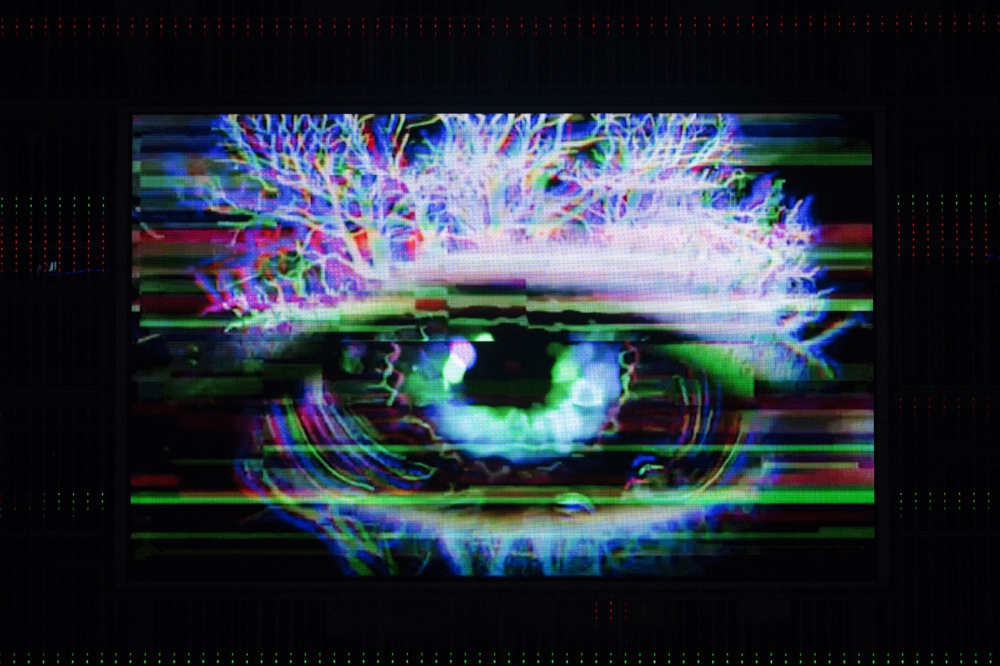
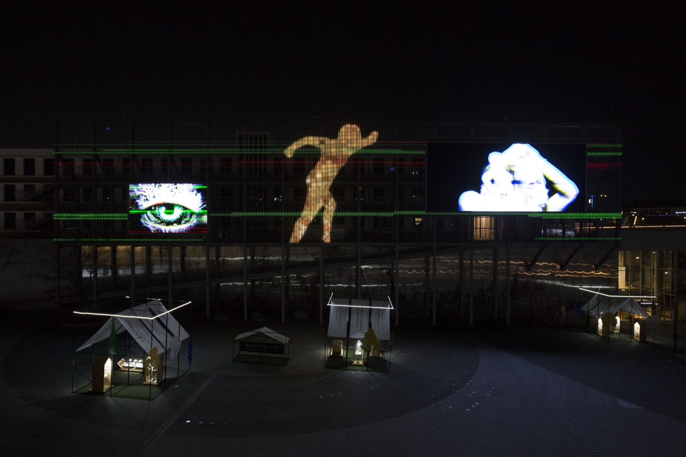
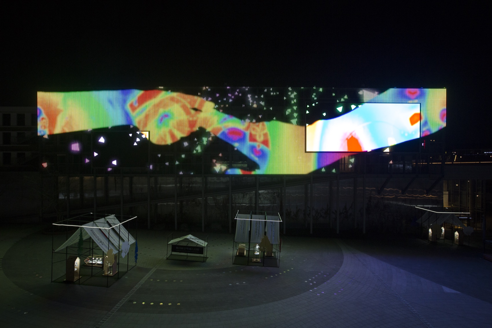
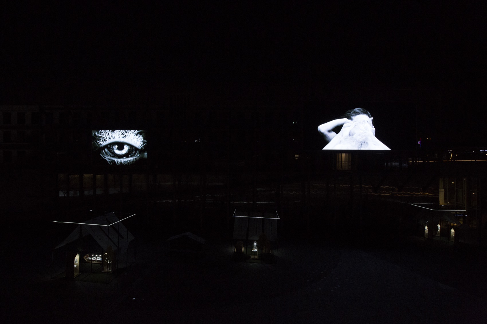
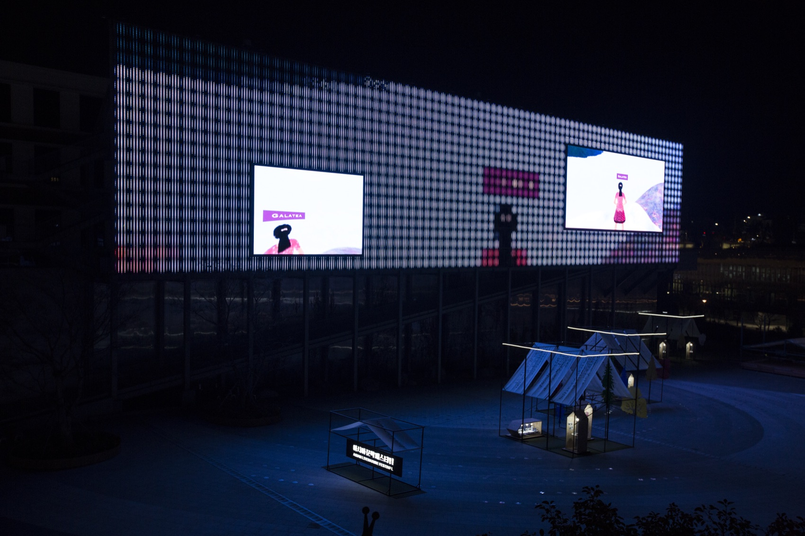

Media Wall — 2017–2018
Human Flight휴먼 플라이트 · ACC 미디어아트월
백인들의 이주현상 ‘화이트 플라이트’에서 착안한 ‘휴먼 플라이트’ — 테크놀로지의 유입으로 발생하는 인간의 이주를 미디어월 위에 그리다.
After ‘white flight,’ a ‘human flight’ — the migration of the human set off by the influx of technology, drawn across a media wall.
‘휴먼 플라이트(Human Flight)’는 백인들의 이주현상인 화이트 플라이트에서 착안한 제목으로, 테크놀로지의 유입으로 발생하는 인간의 이주현상을 의미합니다. 포스트휴먼, 가상현실 공간, 사유의 축이 입체적으로 교차하면서 — 사람의 움직임을 통한 몸의 언어, 언어의 불가능성을 사는 동시에 삶을 극복하는 시(詩)의 언어, 인간과 테크놀로지의 접점에서 새로운 차원의 공간을 실현하는 가상현실이 작품의 주요 재료가 됩니다.
VR은 360도의 공간을 2D 평면 공간으로 번역하며, 전방위 공간을 평면으로 수용하는 과정에서 왜곡이 발생합니다. 이 작업은 등장방형도법(equirectangular)의 그 왜곡현상을 미학적으로 수용합니다. ‘살아 움직이는 그림’을 뜻하는 타블로 비방(Tableau Vivant) 연작의 장소성과 매체성, 공연성이 미디어월이라는 초대형 화면 위로 확장된 작업입니다.
‘Human Flight’ takes its title from the phenomenon of white flight: here, the migration of the human brought on by the influx of technology. Posthumanism, virtual space and axes of thought cross dimensionally — the body’s language of movement, the language of poetry that lives the impossibility of language while overcoming life, and virtual reality, realising space of another dimension at the meeting point of human and technology, become the work’s materials. VR translates 360 degrees of space onto a 2D plane, and in that translation distortion arises; the work embraces the distortion of the equirectangular projection aesthetically — the sitedness, mediality and performativity of the Tableau Vivant series extended onto the vast surface of a media wall.
- 작가
- Artist
- 김제민 Kim Jae Min
- 제작
- Production
- 360 촬영 · VR 편집 · 스티칭(Autopano) · VR 플러그인(Mettle, Mantra, Mocha) · After Effects, Premiere
- 360° shooting · VR editing · stitching (Autopano) · VR plugins (Mettle, Mantra, Mocha) · After Effects, Premiere
- 기획의도
- Curatorial note
- 국립아시아문화전당이 추구하는 장소성과 가치를 반영하고, 미디어월의 기술적 환경과 특성을 고려하여 수준높은 미디어월을 선보인다. 살아있는 그림과 시(詩)를 통해 매체담론을 반영하는 사람, 언어, 공간을 이야기한다.
- Reflecting the ACC’s sense of place and the media wall’s technical character, the work speaks of people, language and space — living pictures and poems carrying the discourse of the medium.
- 키워드
- Keywords
- posthuman · VR distortion · media wall · Tableau Vivant
목적 — 읽는다는 행위
Purpose — the act of reading
‘읽는다’에서 ‘잇는다’로
From reading to joining
사람을 주제로 한 ‘살아있는 그림’, 타블로 비방에서 확장하여 포스트휴먼·가상현실·시(詩)를 통한 사유와 그 ‘읽기’가 실행됩니다. 인간의 모든 활동은 ‘읽는다’라는 행위로 정의할 수 있습니다 — 우리는 글을 읽고, 땅을 읽고, 공간을 읽고, 때론 상대의 마음을 읽습니다. 비로소 ‘읽는다’는 인식 차원에서 공감각적 행위의 차원으로 이행하고, ‘잇는다’는 행위를 통해 관객들에게 공감의 필요성을 강조합니다. 그것이 예술이 지닌 가장 근원적인 속성이라는 걸 말합니다.
개념의 토대에는 인간중심적 사고를 넘어 비인간으로의 전환(nonhuman turn)을 이야기하는 질베르 시몽동(Gilbert Simondon)의 사물존재론적 관점이 있습니다. 인간의 이기와 인간중심 사고에서 비롯된 묵시록적 구조에서 벗어나, 기계적 대상을 동반자의 시선에서 바라보고 — 인간과 테크놀로지가 함께 나아가는 상생적 미래의 메시지를 담고자 했습니다.
Extending Tableau Vivant’s living pictures of people, the work performs thinking — and its reading — through the posthuman, virtual reality and poetry. Every human activity can be defined as an act of reading: we read texts, read the land, read space, read another’s heart. Reading passes from cognition into synaesthetic act, and through the near-homonym ‘joining’ (itneunda), the work presses the need for empathy — art’s most fundamental property. Beneath the concept lies Gilbert Simondon’s ontology of technical objects and the nonhuman turn: leaving the apocalyptic structure born of human self-interest, seeing the machine as companion, and carrying a message of a mutualistic future in which human and technology advance together.
- 이어지는 작업
- Where it led
- 여기서 정리된 인간-기계 공진화의 시선은 이듬해 I Question(2018)으로, 시의 언어에 대한 관심은 시작하는 아이(2021)로 이어진다.
- The gaze of human–machine co-evolution set out here leads into I Question (2018); the interest in poetic language into The Child Who Writes Poetry (2021).
전시 기록 — ACC 미디어아트월, 2017–2018
Exhibition record — ACC Media Art Wall, 2017–2018



